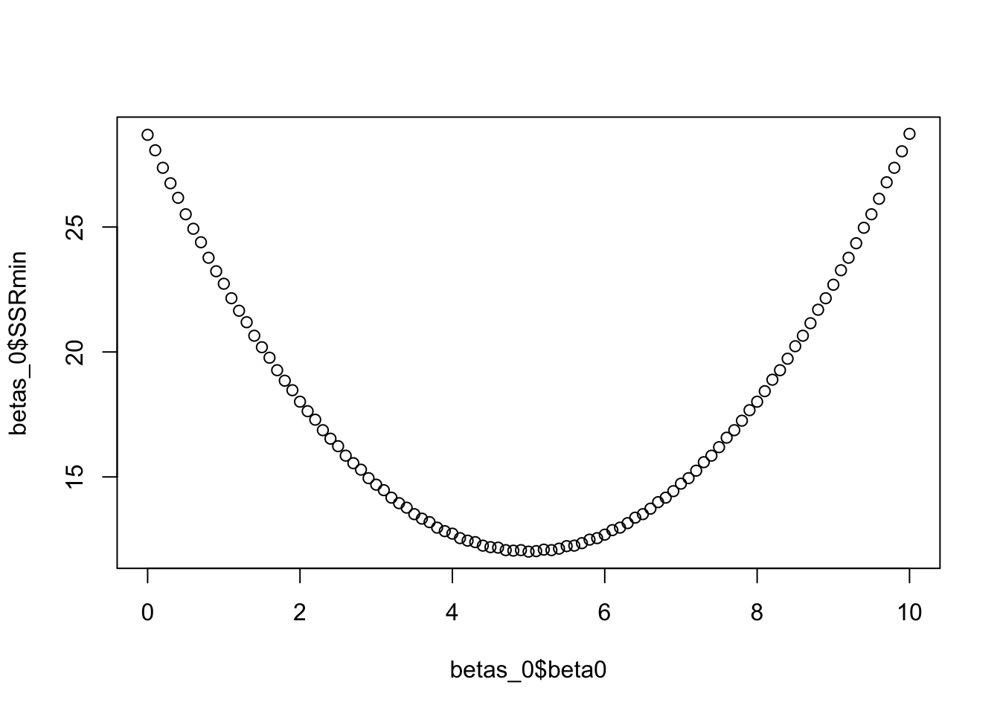

library(tidyverse)
library(rgl)Error in `library()`:
! there is no package called 'rgl'A thermal performance curve (TPC) is any continuous function that maps the response of an ectothermic organism to temperature. Typically, they are unimodal and asymmetric (though exceptions exist to every rule). Importantly, they are almost always non-linear when a broad enough range of temperatures is considered.

We are often interested in extracting certain values of interest from a TPC. These include the maximum critical temperature (\(CT_{min}\)), the minimum critical temperature (\(CT_{min}\)), the optimal temperature (\(T_{opt}\)), and the thermal breadth. These are defined below:
| \(CT_{min}\) | The minimum temperature at which the organism is able to express the modeled trait |
| \(CT_{max}\) | The maximum temperature at which the organism is able to express the modeled trait |
| \(T_{opt}\) | The temperature at which the organism expresses the trait at the maximum value |
| Thermal Breadth | The range of temperatures across which the organism is able to express the trait |
Because the responses of an ectotherm across temperatures are frequently non-linear, linear models don’t always fit well (but remember that linear models can still produce curves - see note). We usually need non-linear models. Two main types of these models exist, mechanistic and phenomenological.
Linear models can still accommodate curved responses, like in the case of polynomial regression (\(y = \beta_0 + \beta_1x + \beta_2x^2 + \epsilon_i\)). However, we can often get a better fit for certain curvatures using non-linear models. A non-linear model is one that is not linear in the parameters, not necessarily in the variables. For example, a model where a parameter shows up as an exponent in the equation is non-linear (e.g. \(y = \beta_0x^{\beta2} + \epsilon_i\)).
Mechanistic TPCs include parameters that are biologically meaningful. They are rooted in an understanding of the pathways that produce a response. A well known example of a mechanistic TPC is the Sharpe-Schoolfield model:
\[ rate = \frac{r_{tref}e^{\frac{-E_a}{k} \left(\frac{1}{t} - \frac{1}{t_{ref}}\right)}}{1 + e^{\frac{E_l}{k} \left(\frac{1}{t_l} - \frac{1}{t}\right)} + e^{\frac{E_h}{k} \left(\frac{1}{t_h} - \frac{1}{t}\right)}}. \]
While this looks pretty complicated, the parameters in this model have some kind of biological or biochemical meaning. For example, \(k\) is Boltzmann’s constant and \(E_a\) is an activation energy for enzymes involved in producing the response.
Phenomenological TPCs fit the data, but do not necessarily include parameters that are related to the physiology involved in producing the response. However, we can still use them to extract meaningful information from the fitted TPC. For example, we can still extract the optimal temperature (\(T_{opt}\)) for the trait we are modeling. Often, though not always, these models involve fewer parameters. A common example is the Briere model:
\[ rate = \alpha t(t-t_{min})(t_{max}-t)^{\frac{1}{2}}. \]
This one looks a lot less scary than the Sharpe-Schoolfield model above, but the parameters we will fit won’t necessarily have a biochemical or physiological meaning. Some of the parameters are difficult to give practical meaning to outside of the fit of the curve. For example, \(\alpha\) is a scale parameter that controls the height of the curve. Other parameters do have a more clear practical meaning. For example, \(t_{min}\) is the lower critical temperature below which the trait is no longer expressed.
Thermal performance curves are used for a few downstream purposes. Ultimately, we fit them to help us understand how the environment may affect the responses of ecologically important ectotherms to help us prepare. To improve our understanding, we can use TPCs for inferential and predictive contexts. Here are some interesting examples of each:
Inferential
Compare TPCs within a species across time or space to understand intraspecific variation (Ashrafi et al. 2018; Blanchard et al. 2024)
Compare TPCs across species to understand the evolution of thermal adaptation (Montagnes et al. 2022)
Predictive
Predict range shifts with the progression of climate change (Angert et al. 2011)
Population and disease forecasting (Johnson et al. 2018)
There are a few ways we can fit a model to data. Generally, those fall into frequentist and Bayesian categories. We will focus on the frequentist approach today, but see the bonus content for some brief details about the Bayesian approach.
To understand how non-linear models are fit, let’s quickly review ordinary least squares (OLS) (AKA how we fit linear models).
Any method labeled “Least Squares” will be trying to find parameter values that minimize the sum of squared residuals from the resulting model.
Remember that the sum of squared residuals (SSR) serves as a metric for model error when its predictions are compared to the observed data we are fitting to. The SSR is calculated as:
\[ SSR = \sum_{i = 1}^n\left[y_i - f(x_i, \beta) \right]^2, \]
which is just taking the sum of the differences between the actual values and their associated model predicted values. We square them because, otherwise, the positive and negative values would cancel each other out.
Let’s visualize how this operates for the simple linear regression model, \(y_i = \beta_0 + \beta_1x_i+\epsilon_i\).
library(tidyverse)
library(rgl)Error in `library()`:
! there is no package called 'rgl'# Put some data in here
x <- c(1,2,3,4)
y <- c(9.5, 11, 19.6, 20)
# Plot it - looks kind of like a line
plot(x, y)
#Let's look through a few parameter values for the slope and see what the result looks like
# Make a search grid of parameter values
beta0 <- seq(0,10,0.1)
beta1 <- seq(0,10,0.1)
betas <- expand.grid(beta0 = beta0,
beta1 = beta1)
# Get SSR values for each beta set
for (i in 1:nrow(betas)){
beta0 <- betas$beta0[i]
beta1 <- betas$beta1[i]
SSR <- sum((y - (beta0 + beta1*x))^2)
betas$SSR[i] <- SSR
}
# Plot the SSR for each pair of values
plot3d(
x=betas$beta0, y=betas$beta1, z=betas$SSR,
type = 's',
radius = 5)Error in `plot3d()`:
! could not find function "plot3d"rglwidget()Error in `rglwidget()`:
! could not find function "rglwidget"# Surfaces are difficult to visualize, so let's break it down into # the components for ease
betas_0 <- betas %>%group_by(beta0) %>% summarize(SSRmin = min(SSR))
betas_1 <- betas %>%group_by(beta1) %>% summarize(SSRmin = min(SSR))
# Notice that the minimum SSR happens when beta0 = 5
plot(betas_0$beta0, betas_0$SSRmin)
# Notice that the minimum SSR happens when beta1 = 4
plot(betas_1$beta1, betas_1$SSRmin)
For linear models, we can actually use matrix algebra to nicely find the exact solution to our problem. There is only one set of parameter values that minimizes SSR for linear models. This is how the lm() function in R finds the parameter values.
# We get the same result using the lm() function that uses OLS to
# find the parameter values
summary(lm(y ~ x))
Call:
lm(formula = y ~ x)
Residuals:
1 2 3 4
0.49 -2.02 2.57 -1.04
Coefficients:
Estimate Std. Error t value Pr(>|t|)
(Intercept) 5.000 3.001 1.666 0.2376
x 4.010 1.096 3.660 0.0672 .
---
Signif. codes: 0 '***' 0.001 '**' 0.01 '*' 0.05 '.' 0.1 ' ' 1
Residual standard error: 2.45 on 2 degrees of freedom
Multiple R-squared: 0.8701, Adjusted R-squared: 0.8051
F-statistic: 13.39 on 1 and 2 DF, p-value: 0.06723It turns out that this isn’t quite as easy in the non-linear parameter space, but non-linear models are often better fits for thermal performance data than linear models, even ones with curvature. Because of that, we need another approach to find the best parameters for non-linear models. Enter Non-Linear Least Squares (NLLS)!
In the case of linear models, there is only one set of parameter values that produces a minimum SSR value. In the non-linear space, we are not so fortunate. There are often local minima that can “trick” the fitting algorithm into thinking it has found the right fit when there is really a better set of parameters for the data.

Since this is the case, we can’t use matrix algebra to nicely find the solution. We have to use an iterative grid search approach to find a close-to-optimal least squares solution. The process goes like this:
Now that you understand the conceptual framework behind NLLS, let’s apply it in R to fit some TPCs! In any model fitting exercise, we typically follow a few important steps to make sure we fit an appropriate model and get the desired outputs, so we will work through each of them.
First, let’s bring in some data from VecTraits using the API. We will also use this opportunity to explore the effect of fitting curves to averages versus individual-level data by reproducing an example from Ryan et al. (2025) .
This data set contains data on the duration of the juvenile life stage of Aedes aegypti mosquitoes. Inverting these data (1/ development time) produces a development rate, which is what we will model.
# Run the API file to load in all the functions we need
source("code/VecTraits_Dataset_Access.R")
mosquito_df <- getDataset(578) #this returns a list of data frames in case we ask for several data sets.
df <- mosquito_df[[1]] #we can extract our data frame like thisFirst, let’s look at the data across the temperatures we have. First, we have to wrangle the data to simplify it and create versions with the individual-level and aggregated data. We are also going to restrict our analysis to one level of the second stressor available in the dataset to prevent confusion.
# Make a data set of the aggregated mean values
development_rate_mean <- df %>%
filter(SecondStressorValue == 165) %>%
group_by(Interactor1Temp) %>%
summarise(Trait = mean(1 / OriginalTraitValue), .groups = "drop") %>%
mutate(curve_ID = factor(1), Temp = Interactor1Temp)
# Make a dataset of the individual-level values
development_rate_individuals <- df %>%
filter(SecondStressorValue == 165) %>%
mutate(curve_ID = factor(2),
Temp = Interactor1Temp,
Trait = 1 / OriginalTraitValue)Now we can examine both the individual-level and mean data. The means seem to be fairly central to the data clusters, so that might lead us to believe that modeling the mean values may not be so bad after all. 🤔
ggplot() +
geom_jitter(data = development_rate_individuals,
aes(Temp, Trait),
size = 2, shape = 21, fill = "black", col = "white",
width = 0.12) +
geom_point(data = development_rate_mean,
aes(Temp, Trait),
size = 3, shape = 22, colour = "black", fill = "red") +
theme_bw()
Above, we discussed the Briere function that is commonly used to fit TPCs. We will use the Briere formula here to fit our curves by using the nls() function in R. It is housed in the stats package and implements non-linear least squares parameter estimation.
When using the nls() function, we have to define starting values for the parameters we are trying to fit to our data. The function will try to use 1 as a default starting value if none are provided, but that often leads to a convergence failure.
# If we don't provide starting values, the nls() function often
# has trouble finding optimal parameter values.
briere <- nls(Trait ~ a*Temp*(Temp-tmin)*(tmax-Temp)^(1/2),
data = development_rate_individuals)Warning in nls(Trait ~ a * Temp * (Temp - tmin) * (tmax - Temp)^(1/2), data = development_rate_individuals): No starting values specified for some parameters.
Initializing 'a', 'tmin', 'tmax' to '1.'.
Consider specifying 'start' or using a selfStart modelError in `numericDeriv()`:
! Missing value or an infinity produced when evaluating the modelSo how do we choose starting values? Well… it’s more of an art than a science. Sometimes, you have fit similar models before and have an idea about what is within the range of plausible. Some approaches when you are not so lucky are to use plots to find some that seem close to right or to try several different ones and compare the parameter estimates you get. We will try the informed guess approach.
First let’s just try some informed guesses. Our temperature range in this data set is ~22-35C so let’s try those for tmin and tmax. For a, we will just start at 1.
briere <- nls(Trait ~ a*Temp*(Temp-tmin)*(tmax-Temp)^(1/2),
start = list(a = 1, tmin = 22, tmax = 35),
data = development_rate_individuals)
briere <- nls(Trait ~ a*Temp*(Temp-tmin)*(tmax-Temp)^(1/2),
start = list(a = 1, tmin = 22, tmax = 35),
data = development_rate_individuals)Great! It converged! Let’s check out the parameter estimates. We can use the summary() function for nls() models just like for lm() models.
# Full summary
summary(briere)
Formula: Trait ~ a * Temp * (Temp - tmin) * (tmax - Temp)^(1/2)
Parameters:
Estimate Std. Error t value Pr(>|t|)
a 7.837e-05 9.058e-06 8.652 2.69e-15 ***
tmin 1.183e+01 1.060e+00 11.163 < 2e-16 ***
tmax 4.058e+01 1.030e+00 39.393 < 2e-16 ***
---
Signif. codes: 0 '***' 0.001 '**' 0.01 '*' 0.05 '.' 0.1 ' ' 1
Residual standard error: 0.01305 on 181 degrees of freedom
Number of iterations to convergence: 6
Achieved convergence tolerance: 4.026e-07# Just the parameters
coef(briere) a tmin tmax
7.837323e-05 1.182975e+01 4.058021e+01 So how do we know we’ve found the best possible values? We can test out more starting values and compare the results!
# Does not converge
briere2 <- nls(Trait ~ a*Temp*(Temp-tmin)*(tmax-Temp)^(1/2),
start = list(a = 5, tmin = 10, tmax = 60),
data = development_rate_individuals)Error in `numericDeriv()`:
! Missing value or an infinity produced when evaluating the model# Converges and gives almost identical result
briere3 <- nls(Trait ~ a*Temp*(Temp-tmin)*(tmax-Temp)^(1/2),
start = list(a = 0.01, tmin = 30, tmax = 40),
data = development_rate_individuals)
coef(briere) a tmin tmax
7.837323e-05 1.182975e+01 4.058021e+01 coef(briere3) a tmin tmax
7.837321e-05 1.182975e+01 4.058022e+01 # Does not converge - looks like the tmax starting value is too high.
briere4 <- nls(Trait ~ a*Temp*(Temp-tmin)*(tmax-Temp)^(1/2),
start = list(a = 0.01, tmin = 15, tmax = 60),
data = development_rate_individuals)Error in `numericDeriv()`:
! Missing value or an infinity produced when evaluating the modelNow that we feel confident that we found reasonable parameter values, let’s assess the model fit to make sure we are using a good model.
Assessing the fit of any model is relative to the modeling goal. If we have a predictive end goal, we may have a threshold of prediction error we are willing to accept. Conversely, if our goal is to make valid inferences we may be more concerned with the error properties of the model. We can also use certain metrics to compare plausible alternative models to see which fits the data best. For this exercise, we are going to use residual plots to check that the error assumptions have been met and a plot of the predicted values to visually assess the model fits.
First, let’s check the residual plots to see if our assumptions are well met.
resBriere <- residuals(briere)
hist(resBriere) #Mostly normal around 0 - good!
plot(resBriere, predict(briere)) #No clear pattern - good!
Now, let’s look at how the model fits the data.
# Generate predicted values to graph
tempDat <- data.frame(Temp =
seq(min(development_rate_individuals$Temp),
max(development_rate_individuals$Temp),
length.out = 100))
d_preds <- predict(briere, newdata = tempDat)
tempDat$preds <- d_preds
# Graph
ggplot() +
geom_jitter(data = development_rate_individuals,
aes(Temp, Trait),
size = 2, shape = 21, fill = "black", col = "white",
width = 0.12) +
geom_point(data = development_rate_mean,
aes(Temp, Trait),
size = 3, shape = 22, colour = "black", fill = "red") +
geom_line(data = tempDat,
aes(x = Temp, y = preds), color = "blue")+
theme_bw()
The fit looks pretty good! Interestingly, the model fit mostly goes through the mean points we generated earlier. More evidence that fitting to means could be okay 🤔.
Another important part of using models to gain understanding about a system is to consider how certain the model is about the information it is providing. If a model produces particularly large error estimates around the parameters, the information provided by the parameters may be all but useless. On the other hand it may point to a high degree of variability in the system, which is valuable information!
One level of uncertainty we may want to understand is the uncertainty around the parameters. We can assess this using confidence intervals that are fairly simple to extract.
# Extract confidence intervals
confint(briere)Waiting for profiling to be done... 2.5% 97.5%
a 5.940779e-05 9.557369e-05
tmin 9.126675e+00 1.356636e+01
tmax 3.899426e+01 4.347811e+01On another level, we may want to be able to visualize the uncertainty across the whole TPC. This requires bootstrapping. Bootstrapping involved re-sampling the data with replacement and re-fitting the model to the samples to be able to generate multiple predictions for each data point (one from each of the re-fitted models with their unique parameter estimates). The figure below provides a visual of this process.

Let’s try it on our model and visualize the results.
library("car") #houses the Boot() function for regression modelsLoading required package: carData
Attaching package: 'car'The following object is masked from 'package:dplyr':
recodeThe following object is masked from 'package:purrr':
some# Re-sample the data set 1000 times and generate 1000 sets of
# parameter estimates (R = 1000)
boot1 <- Boot(briere, method = 'case', R = 100)Loading required namespace: boot# Let's check out the data set of parameter values
head(boot1$t) a tmin tmax
[1,] 8.559546e-05 12.67109 40.04477
[2,] 9.923698e-05 13.36116 38.33490
[3,] 6.140324e-05 10.07202 43.68995
[4,] 8.266328e-05 12.18255 40.04211
[5,] 8.862881e-05 12.56045 39.39415
[6,] 7.586639e-05 11.74268 41.11293# We can plot the distributions using hist()
hist(boot1, c(2,2))Warning in confint.boot(x, type = ci, level = level): BCa method fails for this
problem. Using 'perc' instead
We successfully re-sampled our data and generated new parameters for each sample. Now, let’s see what they look like around our original curve.
# Now we'll generate a data set that has all the simulated prediction
# values.
temperature <- development_rate_individuals$Temp
boot1_preds <- boot1$t %>%
as.data.frame() %>%
drop_na() %>%
mutate(iter = 1:n()) %>% # Add a column for the iteration number
group_by_all() %>% # Group by the iteration number
do(data.frame(temp = seq(min(temperature),
max(temperature),
length.out = 100))) %>% # For each # iteration number, make a sequence of # temperatures to predict across
ungroup() %>% # Release a really long data frame
mutate(pred = a*temp*(temp-tmin)*(tmax-temp)^(1/2))
# calculate bootstrapped confidence intervals for plotting
boot1_conf_preds <- group_by(boot1_preds, temp) %>%
summarise(conf_lower = quantile(pred, 0.025),
conf_upper = quantile(pred, 0.975)) %>%
ungroup()
# plot bootstrapped CIs - we will save this for the next activity.
(ind <- ggplot() +
geom_line(aes(Temp, preds), tempDat, col = 'blue') +
geom_ribbon(aes(temp, ymin = conf_lower, ymax = conf_upper), boot1_conf_preds, fill = 'blue', alpha = 0.3) +
geom_jitter(aes(Temp, Trait),
development_rate_individuals, size = 2,
width = 0.12, shape = 21, alpha = 0.5,
fill = "black", color = "white") +
geom_point(data = development_rate_mean,
aes(Temp, Trait),
size = 3, shape = 22, colour = "black", fill = "red") +
theme_bw(base_size = 12) +
labs(x = 'Temperature (ºC)',
y = 'Growth rate',
title = 'Growth rate across temperatures'))
Often times we only have the mean values for traits when we get the data from published papers, so it would be good to know how that might affect our fits. Based on what we know so far it seems like fitting to the means should work out okay since our curve went right through them.
BUT we run into a few BIG problems.
We can do this kind of fitting in the Bayesian framework, and this is what the MiREVTD team did. This was the result they got:

See how the uncertainty is much larger for the averages? The fitted curve is not quite as accurate either. The takeaway is that, when you have the opportunity to publish your data, it is important to make the full data set available rather than just the mean values!
Check out the practical from a previous year’s workshop that was more heavily focused on modeling:
@online{surratt2026,
author = {Surratt, Alicia},
title = {VectorByte {Training:} {Fitting} {Thermal} {Performance}
{Curves} via {Non-linear} {Least} {Squares}},
date = {2026-05-29},
langid = {en}
}